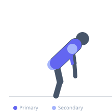
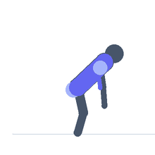

Exercise guide / SkiErg Double-Pole Pull
SkiErg Double-Pole Pull
The SkiErg simulates the double-pole motion of cross-country skiing, pulling two handles downward from an overhead position with a simultaneous hip hinge, engaging the latissimus dorsi, core, triceps, and deltoids under a continuous cardiovascular load. Each stroke begins with the arms raised overhead and ends with a powerful downward pull and hip extension, creating a cyclical full-body pulling pattern. The SkiErg develops both upper-body strength-endurance and cardiovascular conditioning while remaining completely non-impact.
Primary muscles
latissimus dorsi
rectus abdominis
triceps long head
Secondary muscles
deltoid anterior
erector spinae
gluteus maximus
trapezius upper
Stabilizers
transverse abdominis
internal oblique
Equipment


Starting position
- Stand facing the SkiErg machine with feet shoulder-width apart. Grasp both handles with arms extended overhead, body tall, slight forward lean at the hips.
Setup
- Set the damper (resistance) to 4–6. Plug in the performance monitor and select meters or time for the interval target.
Steps
- Step 1: Begin with arms extended overhead and a slight hip hinge. This is the catch position.
- Step 2: Simultaneously pull both handles downward and hinge the hips forward, bringing the handles past the hips to the finish position.
- Step 3: At the finish, the handles are near the hips, body is hinged forward with a flat back, and the core is fully contracted.
- Step 4: Recover by allowing the arms to rise overhead as the hips extend back to the start position in a smooth, continuous motion.
- Step 5: Maintain a consistent stroke rate — typically 30–40 strokes per minute for intervals.
Coaching cues
- Lead with the hip hinge, not just the arms
- Think of pulling the handles through the floor
- Keep long arms — do not bend the elbows early
Breathing
- Exhale sharply on the downward pull (the drive phase). Inhale on the recovery as the arms rise back overhead.
Range of motion
- Arms travel from fully overhead to past the hips. The hip hinge should be pronounced — torso moves from tall to roughly 45° forward.
Tempo
- Interval: 500m hard / 2 minutes rest × 5. Time-based: 30 seconds hard / 30 seconds rest × 10. Stroke rate: 30–40 SPM during hard effort.
Common mistakes
- Pulling only with the arms without engaging the hip hinge, which loses the core and hip contribution
- Letting the elbows bend excessively rather than keeping a long lever during the pull
- Letting go of a smooth rhythm and jerking the handles
Safety
- Avoid rounding the lower back at the bottom of the pull — maintain a neutral spine throughout the hip hinge
Training
- endurance: 5–10 reps
- endurance: 1–1 sets
- Rest: {'endurance': 120}